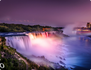

|  | Vatican Museums, Sistine Chapel & St Peter’s | | Madrid, Spain | | |
|
| Numero de reserva | 550994 | | Fecha | Sabado, 3 de junio de 2017 | | Hora | 10:00 Horas | | Numero de personas | 2 |
| | Precio total (impuestos incluidos) | €25 |
|
| Nombre | Cultourberlin |
| Correo electronico | reservas@cultourberlin.com |
| Telefono de emergencia | (+49) 177 652 2171 |